Develop and Conquer
This page includes some interesting coding projects that I have
developed.
Find the source codes on Github.
A thorough development of the five in a row game using Java.
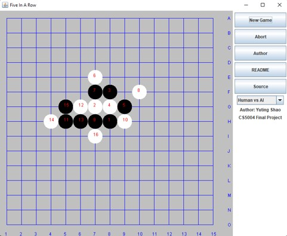The AI player is developed using the minimax algorithm with Alpha-beta pruning.
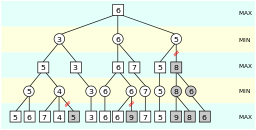Applied Object-Oriented Design and used Model-View-Controller architecture pattern.
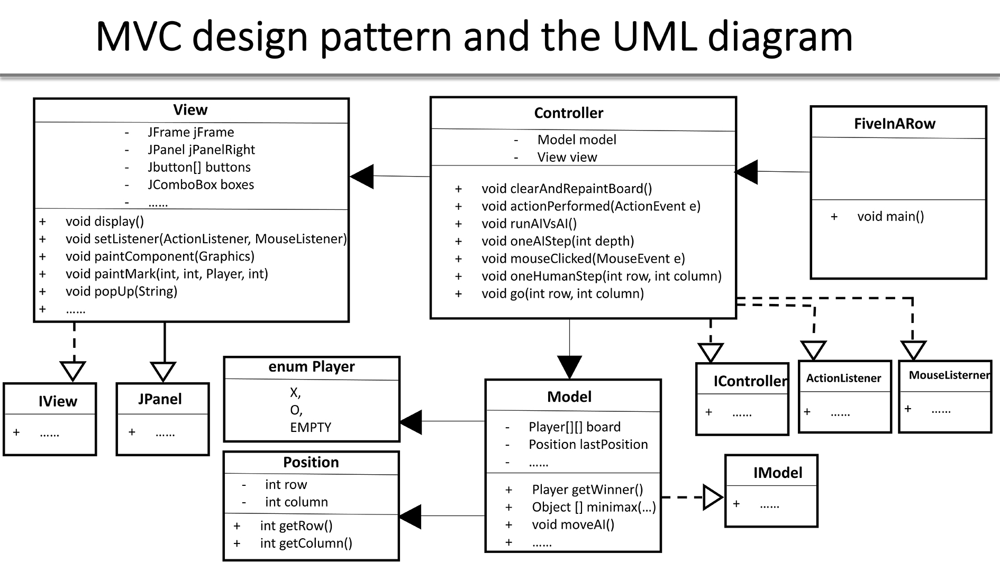Developed the game graphical user interface using the Java Swing and tested the program using JUnit test.
In this project, I implement the Tic-Tac-Toe game using the C programming language. It provide a menu to coordinate the game between a human player and an AI player (computer player) with 12 options. The algorithm used behind the AI player is the minimax algorithm. Minimax is a kind of backtracking algorithm that can be used to find the most optimal move for a player in two player turn-based games, assuming that the other player plays optimally.
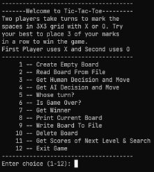The whole project was developed with the following increments.
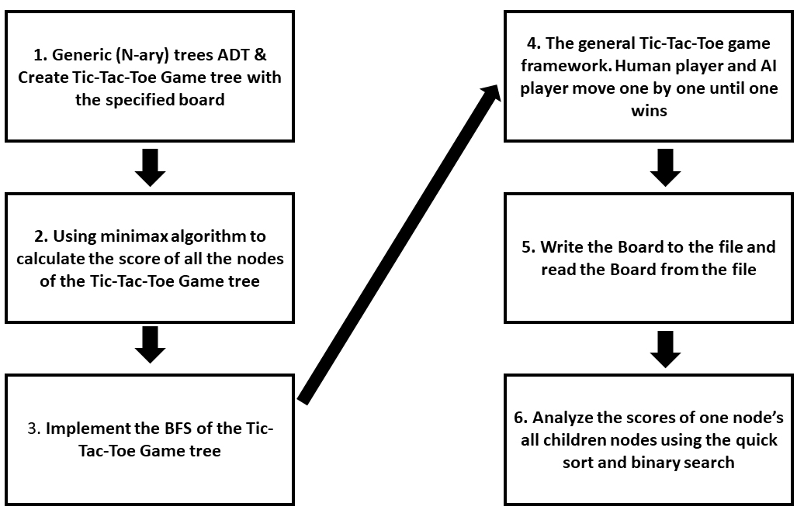The flow of main modules of the program execution from the user’s perspective is as following. The game can be played w/ or w/o AI player.
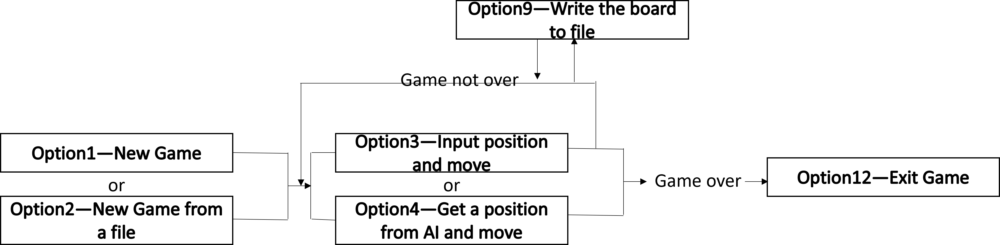A graphical depiction of the main modules from a software architecture point of view is as following.The architecture is comprised of 7 necessary functions to make the game happen and has a menu to guide the user to play the game.
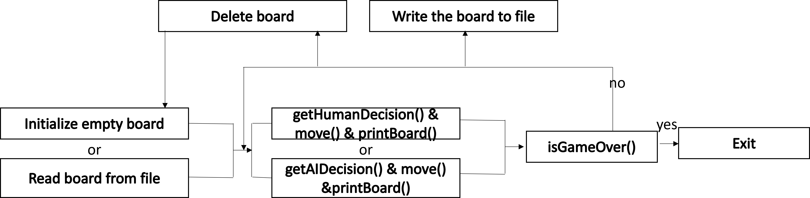In this project, I implement a responsive web app with JavaScript frontend and Python for backend for users to evaluate covid distribution in San Francisco
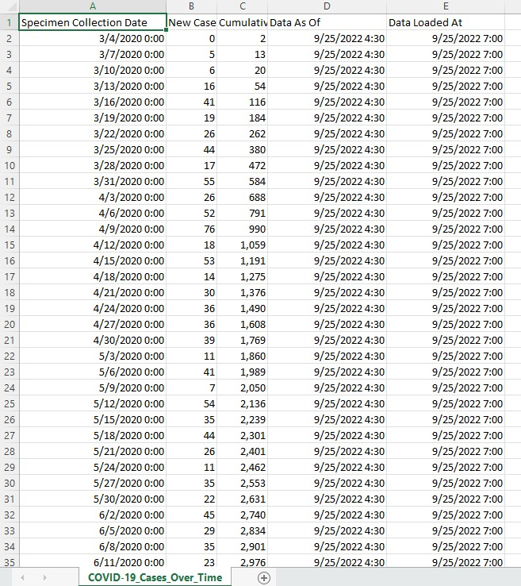I utilized z-score testing to validate data entry and processed real data through MongoDB.
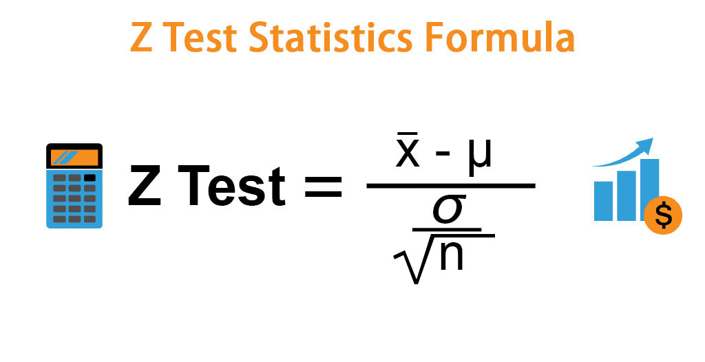Then a logistic regression model was built by Python to predict the distribution of Covid-19.
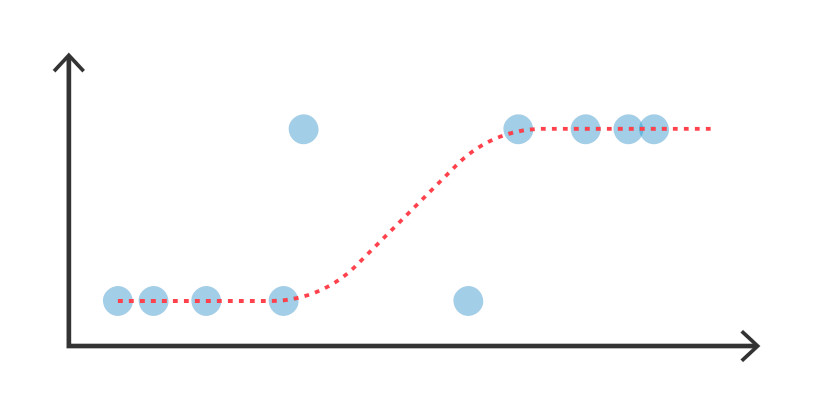In this project, I implement a Streamlit web app to predict the stock future price
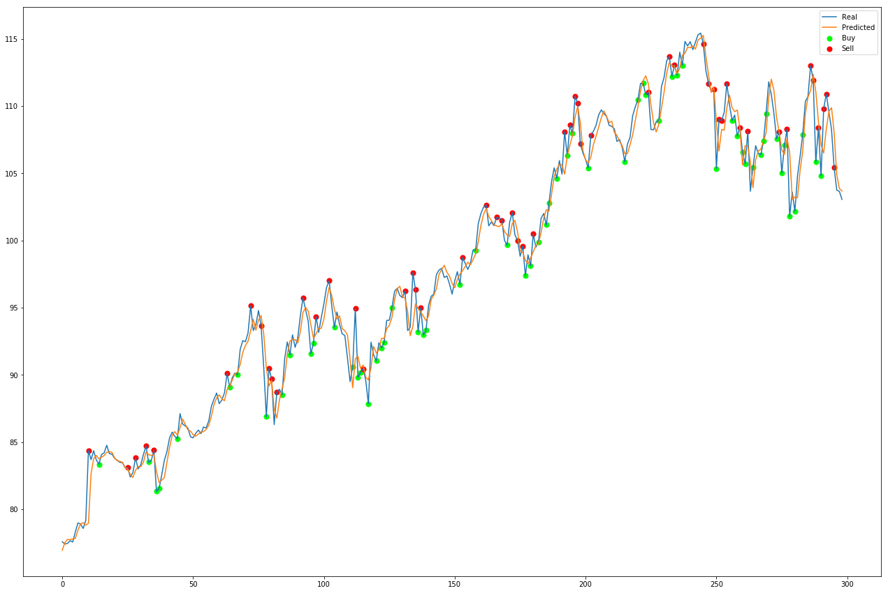I get historical data of different stocks from Yahoo Finance and then predicted the future stock closing price from the historical data using Facebook Prophet.
The prediction results is visualized by plotting interactive graphs using Plotly.